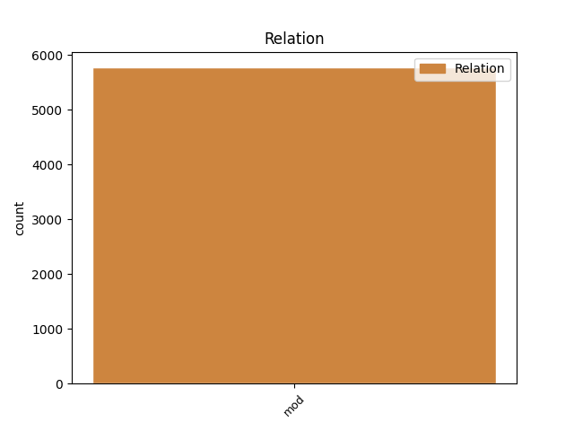

Distribution of features within this leaf

Agreement Rules sorted by frequency.
- When the dependent token is the modifer(mod) of the head token, and the head token is NOUN and the dependent token is ADJ.
1 καὶ _ _ _ _ 0 _ _ _
2 ἐάν _ _ _ _ 0 _ _ _
3 τις _ _ _ _ 0 _ _ _
4 ἀφέλῃ _ _ _ _ 0 _ _ _
5 ἀπὸ _ _ _ _ 0 _ _ _
6 τῶν _ _ _ _ 0 _ _ _
7 λόγων _ _ _ _ 0 _ _ _
8 τοῦ _ _ _ _ 0 _ _ _
9 βιβλίου _ _ _ _ 0 _ _ _
10 τῆς _ _ _ _ 0 _ _ _
11 προφητείας _ _ _ _ 0 _ _ _
12 ταύτης _ _ _ _ 0 _ _ _
13 ἀφελεῖ _ _ _ _ 0 _ _ _
14 ὁ _ _ _ _ 0 _ _ _
15 θεὸς _ _ _ _ 0 _ _ _
16 τὸ _ _ _ _ 0 _ _ _
17 μέρος _ _ _ _ 0 _ _ _
18 αὐτοῦ _ _ _ _ 0 _ _ _
19 ἀπὸ _ _ _ _ 0 _ _ _
20 τοῦ _ _ _ _ 0 _ _ _
21 ξύλου _ _ _ _ 0 _ _ _
22 τῆς _ _ _ _ 0 _ _ _
23 ζωῆς _ _ _ _ 0 _ _ _
24 καὶ _ _ _ _ 0 _ _ _
25 ἐκ _ _ _ _ 0 _ _ _
26 τῆς _ _ _ _ 0 _ _ _
27 πόλεως πόλις NOUN Nb Case=Gen|Gender=Fem|Number=Sing 0 _ _ _
28 τῆς _ _ _ _ 0 _ _ _
29 ἁγίας ἅγιος ADJ A- Case=Gen|Degree=Pos|Gender=Fem|Number=Sing 27 mod _ ref=REV_22.19
30 τῶν _ _ _ _ 0 _ _ _
31 γεγραμμένων _ _ _ _ 0 _ _ _
32 ἐν _ _ _ _ 0 _ _ _
33 τῷ _ _ _ _ 0 _ _ _
34 βιβλίῳ _ _ _ _ 0 _ _ _
35 τούτῳ _ _ _ _ 0 _ _ _
1 καὶ _ _ _ _ 0 _ _ _
2 ἐάν _ _ _ _ 0 _ _ _
3 τις _ _ _ _ 0 _ _ _
4 ἀφέλῃ _ _ _ _ 0 _ _ _
5 ἀπὸ _ _ _ _ 0 _ _ _
6 τῶν _ _ _ _ 0 _ _ _
7 λόγων _ _ _ _ 0 _ _ _
8 τοῦ _ _ _ _ 0 _ _ _
9 βιβλίου _ _ _ _ 0 _ _ _
10 τῆς _ _ _ _ 0 _ _ _
11 προφητείας _ _ _ _ 0 _ _ _
12 ταύτης _ _ _ _ 0 _ _ _
13 ἀφελεῖ _ _ _ _ 0 _ _ _
14 ὁ _ _ _ _ 0 _ _ _
15 θεὸς _ _ _ _ 0 _ _ _
16 τὸ _ _ _ _ 0 _ _ _
17 μέρος μέρος NOUN Nb Case=Acc|Gender=Neut|Number=Sing 0 _ _ _
18 αὐτοῦ _ _ _ _ 0 _ _ _
19 ἀπὸ _ _ _ _ 0 _ _ _
20 τοῦ _ _ _ _ 0 _ _ _
21 ξύλου _ _ _ _ 0 _ _ _
22 τῆς _ _ _ _ 0 _ _ _
23 ζωῆς _ _ _ _ 0 _ _ _
24 καὶ _ _ _ _ 0 _ _ _
25 ἐκ _ _ _ _ 0 _ _ _
26 τῆς _ _ _ _ 0 _ _ _
27 πόλεως _ _ _ _ 0 _ _ _
28 τῆς _ _ _ _ 0 _ _ _
29 ἁγίας _ _ _ _ 0 _ _ _
30 τῶν _ _ _ _ 0 _ _ _
31 γεγραμμένων γράφω VERB V- Aspect=Perf|Case=Gen|Gender=Neut|Number=Plur|Tense=Past|VerbForm=Part|Voice=Pass 17 mod _ ref=REV_22.19
32 ἐν _ _ _ _ 0 _ _ _
33 τῷ _ _ _ _ 0 _ _ _
34 βιβλίῳ _ _ _ _ 0 _ _ _
35 τούτῳ _ _ _ _ 0 _ _ _
1 ἀνὰ _ _ _ _ 0 _ _ _
2 εἷς _ _ _ _ 0 _ _ _
3 ἕκαστος _ _ _ _ 0 _ _ _
4 τῶν _ _ _ _ 0 _ _ _
5 πυλώνων _ _ _ _ 0 _ _ _
6 ἦν _ _ _ _ 0 _ _ _
7 ἐξ _ _ _ _ 0 _ _ _
8 ἑνὸς εἷς NUM Ma Case=Gen|Gender=Masc|Number=Sing 9 mod _ ref=REV_21.21
9 μαργαρίτου μαργαρίτης NOUN Nb Case=Gen|Gender=Masc|Number=Sing 0 _ _ _
1 καὶ _ _ _ _ 0 _ _ _
2 εἶδον _ _ _ _ 0 _ _ _
3 τοὺς _ _ _ _ 0 _ _ _
4 νεκρούς νεκρός ADJ A- Case=Acc|Degree=Pos|Gender=Masc|Number=Plur 0 _ _ _
5 τοὺς _ _ _ _ 0 _ _ _
6 μεγάλους μέγας ADJ A- Case=Acc|Degree=Pos|Gender=Masc|Number=Plur 4 mod _ ref=REV_20.12
7 καὶ _ _ _ _ 0 _ _ _
8 τοὺς _ _ _ _ 0 _ _ _
9 μικρούς _ _ _ _ 0 _ _ _
10 ἑστῶτας _ _ _ _ 0 _ _ _
11 ἐνώπιον _ _ _ _ 0 _ _ _
12 τοῦ _ _ _ _ 0 _ _ _
13 θρόνου _ _ _ _ 0 _ _ _
14 καὶ _ _ _ _ 0 _ _ _
15 βιβλία _ _ _ _ 0 _ _ _
16 ἠνοίχθησαν _ _ _ _ 0 _ _ _
1 ὁ _ _ _ _ 0 _ _ _
2 φωστὴρ _ _ _ _ 0 _ _ _
3 αὐτῆς _ _ _ _ 0 _ _ _
4 ὅμοιος ὅμοιος ADJ A- Case=Nom|Degree=Pos|Gender=Masc|Number=Sing 0 _ _ _
5 λίθῳ _ _ _ _ 0 _ _ _
6 τιμιωτάτῳ _ _ _ _ 0 _ _ _
7 ὡς _ _ _ _ 0 _ _ _
8 λίθῳ _ _ _ _ 0 _ _ _
9 ἰάσπιδι _ _ _ _ 0 _ _ _
10 κρυσταλλίζοντι κρυσταλλίζω VERB V- Case=Dat|Gender=Masc|Number=Sing|Tense=Pres|VerbForm=Part|Voice=Act 4 mod _ ref=REV_21.11
1 Βαβυλὼν Βαβυλών PROPN Ne Case=Nom|Gender=Fem|Number=Sing 0 _ _ _
2 ἡ _ _ _ _ 0 _ _ _
3 μεγάλη μέγας ADJ A- Case=Nom|Degree=Pos|Gender=Fem|Number=Sing 1 mod _ ref=REV_17.5
4 ἡ _ _ _ _ 0 _ _ _
5 μήτηρ _ _ _ _ 0 _ _ _
6 τῶν _ _ _ _ 0 _ _ _
7 πορνῶν _ _ _ _ 0 _ _ _
8 καὶ _ _ _ _ 0 _ _ _
9 τῶν _ _ _ _ 0 _ _ _
10 βδελυγμάτων _ _ _ _ 0 _ _ _
11 τῆς _ _ _ _ 0 _ _ _
12 γῆς _ _ _ _ 0 _ _ _
1 εἰ _ _ _ _ 0 _ _ _
2 δέ _ _ _ _ 0 _ _ _
3 τις τὶς ADJ Px Case=Nom|Gender=Masc|Number=Sing 0 _ _ _
4 ὑμῶν ὑμεῖς PRON Pp Case=Gen|Gender=Masc|Number=Plur|Person=2|PronType=Prs 3 mod _ ref=JAS_1.5
5 λείπεται _ _ _ _ 0 _ _ _
6 σοφίας _ _ _ _ 0 _ _ _
7 αἰτείτω _ _ _ _ 0 _ _ _
8 παρὰ _ _ _ _ 0 _ _ _
9 τοῦ _ _ _ _ 0 _ _ _
10 διδόντος _ _ _ _ 0 _ _ _
11 θεοῦ _ _ _ _ 0 _ _ _
12 πᾶσιν _ _ _ _ 0 _ _ _
13 ἁπλῶς _ _ _ _ 0 _ _ _
14 καὶ _ _ _ _ 0 _ _ _
15 μὴ _ _ _ _ 0 _ _ _
16 ὀνειδίζοντος _ _ _ _ 0 _ _ _
17 καὶ _ _ _ _ 0 _ _ _
18 δοθήσεται _ _ _ _ 0 _ _ _
19 αὐτῷ _ _ _ _ 0 _ _ _
1 παραγγέλλω _ _ _ _ 0 _ _ _
2 ἐνώπιον _ _ _ _ 0 _ _ _
3 θεοῦ _ _ _ _ 0 _ _ _
4 τοῦ _ _ _ _ 0 _ _ _
5 ζῳογονοῦντος _ _ _ _ 0 _ _ _
6 τὰ _ _ _ _ 0 _ _ _
7 πάντα _ _ _ _ 0 _ _ _
8 καὶ _ _ _ _ 0 _ _ _
9 Χριστοῦ _ _ _ _ 0 _ _ _
10 Ἰησοῦ Ἰησοῦς PROPN Ne Case=Gen|Gender=Masc|Number=Sing 0 _ _ _
11 τοῦ _ _ _ _ 0 _ _ _
12 μαρτυρήσαντος μαρτυρέω VERB V- Aspect=Perf|Case=Gen|Gender=Masc|Number=Sing|Tense=Past|VerbForm=Part|Voice=Act 10 mod _ ref=1TIM_6.13
13 ἐπὶ _ _ _ _ 0 _ _ _
14 Ποντίου _ _ _ _ 0 _ _ _
15 Πειλάτου _ _ _ _ 0 _ _ _
16 τὴν _ _ _ _ 0 _ _ _
17 καλὴν _ _ _ _ 0 _ _ _
18 ὁμολογίαν _ _ _ _ 0 _ _ _
19 τηρῆσαί _ _ _ _ 0 _ _ _
20 σε _ _ _ _ 0 _ _ _
21 τὴν _ _ _ _ 0 _ _ _
22 ἐντολὴν _ _ _ _ 0 _ _ _
23 ἄσπιλον _ _ _ _ 0 _ _ _
24 ἀνεπίλημπτον _ _ _ _ 0 _ _ _
25 μέχρι _ _ _ _ 0 _ _ _
26 τῆς _ _ _ _ 0 _ _ _
27 ἐπιφανείας _ _ _ _ 0 _ _ _
28 τοῦ _ _ _ _ 0 _ _ _
29 κυρίου _ _ _ _ 0 _ _ _
30 ἡμῶν _ _ _ _ 0 _ _ _
31 Ἰησοῦ _ _ _ _ 0 _ _ _
32 Χριστοῦ _ _ _ _ 0 _ _ _
33 ἣν _ _ _ _ 0 _ _ _
34 καιροῖς _ _ _ _ 0 _ _ _
35 ἰδίοις _ _ _ _ 0 _ _ _
36 δείξει _ _ _ _ 0 _ _ _
37 ὁ _ _ _ _ 0 _ _ _
38 μακάριος _ _ _ _ 0 _ _ _
39 καὶ _ _ _ _ 0 _ _ _
40 μόνος _ _ _ _ 0 _ _ _
41 δυνάστης _ _ _ _ 0 _ _ _
42 ὁ _ _ _ _ 0 _ _ _
43 βασιλεὺς _ _ _ _ 0 _ _ _
44 τῶν _ _ _ _ 0 _ _ _
45 βασιλευόντων _ _ _ _ 0 _ _ _
46 καὶ _ _ _ _ 0 _ _ _
47 κύριος _ _ _ _ 0 _ _ _
48 τῶν _ _ _ _ 0 _ _ _
49 κυριευόντων _ _ _ _ 0 _ _ _
50 ὁ _ _ _ _ 0 _ _ _
51 μόνος _ _ _ _ 0 _ _ _
52 ἔχων _ _ _ _ 0 _ _ _
53 ἀθανασίαν _ _ _ _ 0 _ _ _
54 φῶς _ _ _ _ 0 _ _ _
55 οἰκῶν _ _ _ _ 0 _ _ _
56 ἀπρόσιτον _ _ _ _ 0 _ _ _
57 ὃν _ _ _ _ 0 _ _ _
58 εἶδεν _ _ _ _ 0 _ _ _
59 οὐδεὶς _ _ _ _ 0 _ _ _
60 ἀνθρώπων _ _ _ _ 0 _ _ _
61 οὐδὲ _ _ _ _ 0 _ _ _
62 ἰδεῖν _ _ _ _ 0 _ _ _
63 δύναται _ _ _ _ 0 _ _ _
1 ὑμεῖς _ _ _ _ 0 _ _ _
2 γὰρ _ _ _ _ 0 _ _ _
3 μιμηταὶ _ _ _ _ 0 _ _ _
4 ἐγενήθητε _ _ _ _ 0 _ _ _
5 ἀδελφοί _ _ _ _ 0 _ _ _
6 τῶν _ _ _ _ 0 _ _ _
7 ἐκκλησιῶν ἐκκλησία NOUN Nb Case=Gen|Gender=Fem|Number=Plur 0 _ _ _
8 τοῦ _ _ _ _ 0 _ _ _
9 θεοῦ _ _ _ _ 0 _ _ _
10 τῶν _ _ _ _ 0 _ _ _
11 οὐσῶν εἰμί AUX V- Case=Gen|Gender=Fem|Number=Plur|Tense=Pres|VerbForm=Part|Voice=Act 7 mod _ LId=1|ref=1THESS_2.14
12 ἐν _ _ _ _ 0 _ _ _
13 τῇ _ _ _ _ 0 _ _ _
14 Ἰουδαίᾳ _ _ _ _ 0 _ _ _
15 ἐν _ _ _ _ 0 _ _ _
16 Χριστῷ _ _ _ _ 0 _ _ _
17 Ἰησοῦ _ _ _ _ 0 _ _ _
18 ὅτι _ _ _ _ 0 _ _ _
19 τὰ _ _ _ _ 0 _ _ _
20 αὐτὰ _ _ _ _ 0 _ _ _
21 ἐπάθετε _ _ _ _ 0 _ _ _
22 καὶ _ _ _ _ 0 _ _ _
23 ὑμεῖς _ _ _ _ 0 _ _ _
24 ὑπὸ _ _ _ _ 0 _ _ _
25 τῶν _ _ _ _ 0 _ _ _
26 ἰδίων _ _ _ _ 0 _ _ _
27 συμφυλετῶν _ _ _ _ 0 _ _ _
28 καθὼς _ _ _ _ 0 _ _ _
29 καὶ _ _ _ _ 0 _ _ _
30 αὐτοὶ _ _ _ _ 0 _ _ _
31 ὑπὸ _ _ _ _ 0 _ _ _
32 τῶν _ _ _ _ 0 _ _ _
33 Ἰουδαίων _ _ _ _ 0 _ _ _
34 τῶν _ _ _ _ 0 _ _ _
35 καὶ _ _ _ _ 0 _ _ _
36 τὸν _ _ _ _ 0 _ _ _
37 κύριον _ _ _ _ 0 _ _ _
38 ἀποκτεινάντων _ _ _ _ 0 _ _ _
39 Ἰησοῦν _ _ _ _ 0 _ _ _
40 καὶ _ _ _ _ 0 _ _ _
41 τοὺς _ _ _ _ 0 _ _ _
42 προφήτας _ _ _ _ 0 _ _ _
43 καὶ _ _ _ _ 0 _ _ _
44 ἡμᾶς _ _ _ _ 0 _ _ _
45 ἐκδιωξάντων _ _ _ _ 0 _ _ _
46 καὶ _ _ _ _ 0 _ _ _
47 θεῷ _ _ _ _ 0 _ _ _
48 μὴ _ _ _ _ 0 _ _ _
49 ἀρεσκόντων _ _ _ _ 0 _ _ _
50 καὶ _ _ _ _ 0 _ _ _
51 πᾶσιν _ _ _ _ 0 _ _ _
52 ἀνθρώποις _ _ _ _ 0 _ _ _
53 ἐναντίων _ _ _ _ 0 _ _ _
54 κωλυόντων _ _ _ _ 0 _ _ _
55 ἡμᾶς _ _ _ _ 0 _ _ _
56 τοῖς _ _ _ _ 0 _ _ _
57 ἔθνεσιν _ _ _ _ 0 _ _ _
58 λαλῆσαι _ _ _ _ 0 _ _ _
59 ἵνα _ _ _ _ 0 _ _ _
60 σωθῶσιν _ _ _ _ 0 _ _ _
61 εἰς _ _ _ _ 0 _ _ _
62 τὸ _ _ _ _ 0 _ _ _
63 ἀναπληρῶσαι _ _ _ _ 0 _ _ _
64 αὐτῶν _ _ _ _ 0 _ _ _
65 τὰς _ _ _ _ 0 _ _ _
66 ἁμαρτίας _ _ _ _ 0 _ _ _
67 πάντοτε _ _ _ _ 0 _ _ _
1 καὶ _ _ _ _ 0 _ _ _
2 ὁ _ _ _ _ 0 _ _ _
3 καπνὸς _ _ _ _ 0 _ _ _
4 τοῦ _ _ _ _ 0 _ _ _
5 βασανισμοῦ βασανισμός NOUN Nb Case=Gen|Gender=Masc|Number=Sing 0 _ _ _
6 αὐτῶν αὐτός PRON Pp Case=Gen|Gender=Masc|Number=Plur|Person=3|PronType=Prs 5 mod _ ref=REV_14.11
7 εἰς _ _ _ _ 0 _ _ _
8 αἰῶνας _ _ _ _ 0 _ _ _
9 αἰώνων _ _ _ _ 0 _ _ _
10 ἀναβαίνει _ _ _ _ 0 _ _ _
11 καὶ _ _ _ _ 0 _ _ _
12 οὐκ _ _ _ _ 0 _ _ _
13 ἔχουσιν _ _ _ _ 0 _ _ _
14 ἀνάπαυσιν _ _ _ _ 0 _ _ _
15 ἡμέρας _ _ _ _ 0 _ _ _
16 καὶ _ _ _ _ 0 _ _ _
17 νυκτός _ _ _ _ 0 _ _ _
18 οἱ _ _ _ _ 0 _ _ _
19 προσκυνοῦντες _ _ _ _ 0 _ _ _
20 τὸ _ _ _ _ 0 _ _ _
21 θηρίον _ _ _ _ 0 _ _ _
22 καὶ _ _ _ _ 0 _ _ _
23 τὴν _ _ _ _ 0 _ _ _
24 εἰκόνα _ _ _ _ 0 _ _ _
25 αὐτοῦ _ _ _ _ 0 _ _ _
26 καὶ _ _ _ _ 0 _ _ _
27 εἴ _ _ _ _ 0 _ _ _
28 τις _ _ _ _ 0 _ _ _
29 λαμβάνει _ _ _ _ 0 _ _ _
30 τὸ _ _ _ _ 0 _ _ _
31 χάραγμα _ _ _ _ 0 _ _ _
32 τοῦ _ _ _ _ 0 _ _ _
33 ὀνόματος _ _ _ _ 0 _ _ _
34 αὐτοῦ _ _ _ _ 0 _ _ _
1 Ἐγένετο _ _ _ _ 0 _ _ _
2 δὲ _ _ _ _ 0 _ _ _
3 καὶ _ _ _ _ 0 _ _ _
4 φιλονεικία _ _ _ _ 0 _ _ _
5 ἐν _ _ _ _ 0 _ _ _
6 αὐτοῖς _ _ _ _ 0 _ _ _
7 τὸ _ _ _ _ 0 _ _ _
8 τίς τίς PRON Pi Case=Nom|Gender=Masc|Number=Sing|PronType=Int 0 _ _ _
9 αὐτῶν αὐτός PRON Pp Case=Gen|Gender=Masc|Number=Plur|Person=3|PronType=Prs 8 mod _ ref=LUKE_22.24
10 δοκεῖ _ _ _ _ 0 _ _ _
11 εἶναι _ _ _ _ 0 _ _ _
12 μείζων _ _ _ _ 0 _ _ _
1 τότε _ _ _ _ 0 _ _ _
2 ὁ _ _ _ _ 0 _ _ _
3 Παῦλος _ _ _ _ 0 _ _ _
4 παραλαβὼν _ _ _ _ 0 _ _ _
5 τοὺς _ _ _ _ 0 _ _ _
6 ἄνδρας _ _ _ _ 0 _ _ _
7 τῇ _ _ _ _ 0 _ _ _
8 ἐχομένῃ _ _ _ _ 0 _ _ _
9 ἡμέρᾳ _ _ _ _ 0 _ _ _
10 σὺν _ _ _ _ 0 _ _ _
11 αὐτοῖς _ _ _ _ 0 _ _ _
12 ἁγνισθεὶς _ _ _ _ 0 _ _ _
13 εἰσῄει _ _ _ _ 0 _ _ _
14 εἰς _ _ _ _ 0 _ _ _
15 τὸ _ _ _ _ 0 _ _ _
16 ἱερόν _ _ _ _ 0 _ _ _
17 διαγγέλλων _ _ _ _ 0 _ _ _
18 τὴν _ _ _ _ 0 _ _ _
19 ἐκπλήρωσιν _ _ _ _ 0 _ _ _
20 τῶν _ _ _ _ 0 _ _ _
21 ἡμερῶν _ _ _ _ 0 _ _ _
22 τοῦ _ _ _ _ 0 _ _ _
23 ἁγνισμοῦ _ _ _ _ 0 _ _ _
24 ἕως _ _ _ _ 0 _ _ _
25 οὗ _ _ _ _ 0 _ _ _
26 προσηνέχθη _ _ _ _ 0 _ _ _
27 ὑπὲρ _ _ _ _ 0 _ _ _
28 ἑνὸς εἷς NUM Ma Case=Gen|Gender=Masc|Number=Sing 0 _ _ _
29 ἑκάστου ἕκαστος ADJ A- Case=Gen|Degree=Pos|Gender=Masc|Number=Sing 28 mod _ ref=ACTS_21.26
30 αὐτῶν _ _ _ _ 0 _ _ _
31 ἡ _ _ _ _ 0 _ _ _
32 προσφορά _ _ _ _ 0 _ _ _
1 καὶ _ _ _ _ 0 _ _ _
2 οὗτοι _ _ _ _ 0 _ _ _
3 πάντες _ _ _ _ 0 _ _ _
4 μαρτυρηθέντες _ _ _ _ 0 _ _ _
5 διὰ _ _ _ _ 0 _ _ _
6 τῆς _ _ _ _ 0 _ _ _
7 πίστεως _ _ _ _ 0 _ _ _
8 οὐκ _ _ _ _ 0 _ _ _
9 ἐκομίσαντο _ _ _ _ 0 _ _ _
10 τὴν _ _ _ _ 0 _ _ _
11 ἐπαγγελίαν _ _ _ _ 0 _ _ _
12 τοῦ _ _ _ _ 0 _ _ _
13 θεοῦ _ _ _ _ 0 _ _ _
14 περὶ _ _ _ _ 0 _ _ _
15 ἡμῶν _ _ _ _ 0 _ _ _
16 κρεῖττόν κρείσσων ADJ A- Case=Acc|Degree=Cmp|Gender=Neut|Number=Sing 17 mod _ ref=HEB_11.40
17 τι τίς PRON Pi Case=Acc|Gender=Neut|Number=Sing|PronType=Int 0 _ _ _
18 προβλεψαμένου _ _ _ _ 0 _ _ _
19 ἵνα _ _ _ _ 0 _ _ _
20 μὴ _ _ _ _ 0 _ _ _
21 χωρὶς _ _ _ _ 0 _ _ _
22 ἡμῶν _ _ _ _ 0 _ _ _
23 τελειωθῶσιν _ _ _ _ 0 _ _ _
1 καὶ _ _ _ _ 0 _ _ _
2 ἔπεσαν _ _ _ _ 0 _ _ _
3 οἱ _ _ _ _ 0 _ _ _
4 πρεσβύτεροι πρέσβυς ADJ A- Case=Nom|Degree=Cmp|Gender=Masc|Number=Plur 0 _ _ _
5 οἱ _ _ _ _ 0 _ _ _
6 εἴκοσι εἴκοσι NUM Ma Case=Nom|Gender=Masc|Number=Plur 4 mod _ ref=REV_19.4
7 τέσσαρες _ _ _ _ 0 _ _ _
8 καὶ _ _ _ _ 0 _ _ _
9 τὰ _ _ _ _ 0 _ _ _
10 τέσσερα _ _ _ _ 0 _ _ _
11 ζῷα _ _ _ _ 0 _ _ _
12 καὶ _ _ _ _ 0 _ _ _
13 προσεκύνησαν _ _ _ _ 0 _ _ _
14 τῷ _ _ _ _ 0 _ _ _
15 θεῷ _ _ _ _ 0 _ _ _
16 τῷ _ _ _ _ 0 _ _ _
17 καθημένῳ _ _ _ _ 0 _ _ _
18 ἐπὶ _ _ _ _ 0 _ _ _
19 τῷ _ _ _ _ 0 _ _ _
20 θρόνῳ _ _ _ _ 0 _ _ _
21 λέγοντες _ _ _ _ 0 _ _ _
1 τότε _ _ _ _ 0 _ _ _
2 ὁ _ _ _ _ 0 _ _ _
3 Παῦλος _ _ _ _ 0 _ _ _
4 παραλαβὼν _ _ _ _ 0 _ _ _
5 τοὺς _ _ _ _ 0 _ _ _
6 ἄνδρας _ _ _ _ 0 _ _ _
7 τῇ _ _ _ _ 0 _ _ _
8 ἐχομένῃ _ _ _ _ 0 _ _ _
9 ἡμέρᾳ _ _ _ _ 0 _ _ _
10 σὺν _ _ _ _ 0 _ _ _
11 αὐτοῖς _ _ _ _ 0 _ _ _
12 ἁγνισθεὶς _ _ _ _ 0 _ _ _
13 εἰσῄει _ _ _ _ 0 _ _ _
14 εἰς _ _ _ _ 0 _ _ _
15 τὸ _ _ _ _ 0 _ _ _
16 ἱερόν _ _ _ _ 0 _ _ _
17 διαγγέλλων _ _ _ _ 0 _ _ _
18 τὴν _ _ _ _ 0 _ _ _
19 ἐκπλήρωσιν _ _ _ _ 0 _ _ _
20 τῶν _ _ _ _ 0 _ _ _
21 ἡμερῶν _ _ _ _ 0 _ _ _
22 τοῦ _ _ _ _ 0 _ _ _
23 ἁγνισμοῦ _ _ _ _ 0 _ _ _
24 ἕως _ _ _ _ 0 _ _ _
25 οὗ _ _ _ _ 0 _ _ _
26 προσηνέχθη _ _ _ _ 0 _ _ _
27 ὑπὲρ _ _ _ _ 0 _ _ _
28 ἑνὸς εἷς NUM Ma Case=Gen|Gender=Masc|Number=Sing 0 _ _ _
29 ἑκάστου _ _ _ _ 0 _ _ _
30 αὐτῶν αὐτός PRON Pp Case=Gen|Gender=Masc|Number=Plur|Person=3|PronType=Prs 28 mod _ ref=ACTS_21.26
31 ἡ _ _ _ _ 0 _ _ _
32 προσφορά _ _ _ _ 0 _ _ _
1 τοῦτο _ _ _ _ 0 _ _ _
2 μὲν _ _ _ _ 0 _ _ _
3 δὴ _ _ _ _ 0 _ _ _
4 τό _ _ _ _ 0 _ _ _
5 ἐκ _ _ _ _ 0 _ _ _
6 τῆς _ _ _ _ 0 _ _ _
7 Ἀσίης _ _ _ _ 0 _ _ _
8 ναυτικὸν _ _ _ _ 0 _ _ _
9 ἦν _ _ _ _ 0 _ _ _
10 σύμπαν σύμπας ADJ A- Case=Nom|Degree=Pos|Gender=Neut|Number=Sing 11 mod _ ref=7.184.4
11 ἐὸν εἰμί AUX V- Case=Nom|Gender=Neut|Number=Sing|Tense=Pres|VerbForm=Part|Voice=Act 0 _ _ _
12 πεντήκοντα _ _ _ _ 0 _ _ _
13 μυριάδες _ _ _ _ 0 _ _ _
14 καὶ _ _ _ _ 0 _ _ _
15 μία _ _ _ _ 0 _ _ _
1 Ἀσπάζεται _ _ _ _ 0 _ _ _
2 ὑμᾶς _ _ _ _ 0 _ _ _
3 Ἀρίσταρχος Ἀρίσταρχος PROPN Ne Case=Nom|Gender=Masc|Number=Sing 0 _ _ _
4 ὁ _ _ _ _ 0 _ _ _
5 συναιχμάλωτός _ _ _ _ 0 _ _ _
6 μου _ _ _ _ 0 _ _ _
7 καὶ _ _ _ _ 0 _ _ _
8 Μᾶρκος _ _ _ _ 0 _ _ _
9 ὁ _ _ _ _ 0 _ _ _
10 ἀνεψιὸς _ _ _ _ 0 _ _ _
11 Βαρναβᾶ _ _ _ _ 0 _ _ _
12 περὶ _ _ _ _ 0 _ _ _
13 οὗ _ _ _ _ 0 _ _ _
14 ἐλάβετε _ _ _ _ 0 _ _ _
15 ἐντολάς _ _ _ _ 0 _ _ _
16 ἐὰν _ _ _ _ 0 _ _ _
17 ἔλθῃ _ _ _ _ 0 _ _ _
18 πρὸς _ _ _ _ 0 _ _ _
19 ὑμᾶς _ _ _ _ 0 _ _ _
20 δέξασθε _ _ _ _ 0 _ _ _
21 αὐτόν _ _ _ _ 0 _ _ _
22 καὶ _ _ _ _ 0 _ _ _
23 Ἰησοῦς _ _ _ _ 0 _ _ _
24 ὁ _ _ _ _ 0 _ _ _
25 λεγόμενος _ _ _ _ 0 _ _ _
26 Ἰοῦστος _ _ _ _ 0 _ _ _
27 οἱ _ _ _ _ 0 _ _ _
28 ὄντες εἰμί AUX V- Case=Nom|Gender=Masc|Number=Plur|Tense=Pres|VerbForm=Part|Voice=Act 3 mod _ LId=1|ref=COL_4.11
29 ἐκ _ _ _ _ 0 _ _ _
30 περιτομῆς _ _ _ _ 0 _ _ _
1 πρὸς _ _ _ _ 0 _ _ _
2 ὃν ὅς PRON Pr Case=Acc|Gender=Masc|Number=Sing|PronType=Rel 0 _ _ _
3 προσερχόμενοι _ _ _ _ 0 _ _ _
4 λίθον _ _ _ _ 0 _ _ _
5 ζῶντα _ _ _ _ 0 _ _ _
6 ὑπὸ _ _ _ _ 0 _ _ _
7 ἀνθρώπων _ _ _ _ 0 _ _ _
8 μὲν _ _ _ _ 0 _ _ _
9 ἀποδεδοκιμασμένον ἀποδοκιμάζω VERB V- Aspect=Perf|Case=Acc|Gender=Masc|Number=Sing|Tense=Past|VerbForm=Part|Voice=Pass 2 mod _ ref=1PET_2.4
10 παρὰ _ _ _ _ 0 _ _ _
11 δὲ _ _ _ _ 0 _ _ _
12 θεῷ _ _ _ _ 0 _ _ _
13 ἐκλεκτὸν _ _ _ _ 0 _ _ _
14 ἔντιμον _ _ _ _ 0 _ _ _
15 καὶ _ _ _ _ 0 _ _ _
16 αὐτοὶ _ _ _ _ 0 _ _ _
17 ὡς _ _ _ _ 0 _ _ _
18 λίθοι _ _ _ _ 0 _ _ _
19 ζῶντες _ _ _ _ 0 _ _ _
20 οἰκοδομεῖσθε _ _ _ _ 0 _ _ _
21 οἶκος _ _ _ _ 0 _ _ _
22 πνευματικὸς _ _ _ _ 0 _ _ _
23 εἰς _ _ _ _ 0 _ _ _
24 ἱεράτευμα _ _ _ _ 0 _ _ _
25 ἅγιον _ _ _ _ 0 _ _ _
26 ἀνενέγκαι _ _ _ _ 0 _ _ _
27 πνευματικὰς _ _ _ _ 0 _ _ _
28 θυσίας _ _ _ _ 0 _ _ _
29 εὐπροσδέκτους _ _ _ _ 0 _ _ _
30 θεῷ _ _ _ _ 0 _ _ _
31 διὰ _ _ _ _ 0 _ _ _
32 Ἰησοῦ _ _ _ _ 0 _ _ _
33 Χριστοῦ _ _ _ _ 0 _ _ _
1 αὗται _ _ _ _ 0 _ _ _
2 γάρ _ _ _ _ 0 _ _ _
3 εἰσιν _ _ _ _ 0 _ _ _
4 δύο _ _ _ _ 0 _ _ _
5 διαθῆκαι _ _ _ _ 0 _ _ _
6 μία εἷς NUM Ma Case=Nom|Gender=Fem|Number=Sing 0 _ _ _
7 μὲν _ _ _ _ 0 _ _ _
8 ἀπὸ _ _ _ _ 0 _ _ _
9 ὄρους _ _ _ _ 0 _ _ _
10 Σινᾶ _ _ _ _ 0 _ _ _
11 εἰς _ _ _ _ 0 _ _ _
12 δουλίαν _ _ _ _ 0 _ _ _
13 γεννῶσα γεννάω VERB V- Case=Nom|Gender=Fem|Number=Sing|Tense=Pres|VerbForm=Part|Voice=Act 6 mod _ ref=GAL_4.24
14 ἥτις _ _ _ _ 0 _ _ _
15 ἐστὶν _ _ _ _ 0 _ _ _
16 Ἄγαρ _ _ _ _ 0 _ _ _
1 τοῦτον _ _ _ _ 0 _ _ _
2 ἠθέλησεν _ _ _ _ 0 _ _ _
3 ὁ _ _ _ _ 0 _ _ _
4 Παῦλος _ _ _ _ 0 _ _ _
5 σὺν _ _ _ _ 0 _ _ _
6 αὐτῷ _ _ _ _ 0 _ _ _
7 ἐξελθεῖν _ _ _ _ 0 _ _ _
8 καὶ _ _ _ _ 0 _ _ _
9 λαβὼν _ _ _ _ 0 _ _ _
10 περιέτεμεν _ _ _ _ 0 _ _ _
11 αὐτὸν _ _ _ _ 0 _ _ _
12 διὰ _ _ _ _ 0 _ _ _
13 τοὺς _ _ _ _ 0 _ _ _
14 Ἰουδαίους Ἰουδαῖος ADJ A- Case=Acc|Degree=Pos|Gender=Masc|Number=Plur 0 _ _ _
15 τοὺς _ _ _ _ 0 _ _ _
16 ὄντας εἰμί AUX V- Case=Acc|Gender=Masc|Number=Plur|Tense=Pres|VerbForm=Part|Voice=Act 14 mod _ LId=1|ref=ACTS_16.3
17 ἐν _ _ _ _ 0 _ _ _
18 τοῖς _ _ _ _ 0 _ _ _
19 τόποις _ _ _ _ 0 _ _ _
20 ἐκείνοις _ _ _ _ 0 _ _ _
1 Μετὰ _ _ _ _ 0 _ _ _
2 δὲ _ _ _ _ 0 _ _ _
3 ταῦτα _ _ _ _ 0 _ _ _
4 ἠρώτησεν _ _ _ _ 0 _ _ _
5 τὸν _ _ _ _ 0 _ _ _
6 Πειλᾶτον _ _ _ _ 0 _ _ _
7 Ἰωσὴφ _ _ _ _ 0 _ _ _
8 ὁ _ _ _ _ 0 _ _ _
9 ἀπὸ _ _ _ _ 0 _ _ _
10 Ἀριμαθαίας _ _ _ _ 0 _ _ _
11 ὢν εἰμί AUX V- Case=Nom|Gender=Masc|Number=Sing|Tense=Pres|VerbForm=Part|Voice=Act 0 _ _ _
12 μαθητὴς _ _ _ _ 0 _ _ _
13 τοῦ _ _ _ _ 0 _ _ _
14 Ἰησοῦ _ _ _ _ 0 _ _ _
15 κεκρυμμένος κρύπτω VERB V- Aspect=Perf|Case=Nom|Gender=Masc|Number=Sing|Tense=Past|VerbForm=Part|Voice=Pass 11 mod _ ref=JOHN_19.38
16 δὲ _ _ _ _ 0 _ _ _
17 διὰ _ _ _ _ 0 _ _ _
18 τὸν _ _ _ _ 0 _ _ _
19 φόβον _ _ _ _ 0 _ _ _
20 τῶν _ _ _ _ 0 _ _ _
21 Ἰουδαίων _ _ _ _ 0 _ _ _
22 ἵνα _ _ _ _ 0 _ _ _
23 ἄρῃ _ _ _ _ 0 _ _ _
24 τὸ _ _ _ _ 0 _ _ _
25 σῶμα _ _ _ _ 0 _ _ _
26 τοῦ _ _ _ _ 0 _ _ _
27 Ἰησοῦ _ _ _ _ 0 _ _ _
1 ἐπὶ _ _ _ _ 0 _ _ _
2 μὲν _ _ _ _ 0 _ _ _
3 τέσσερας _ _ _ _ 0 _ _ _
4 Βᾶττους _ _ _ _ 0 _ _ _
5 καὶ _ _ _ _ 0 _ _ _
6 Ἀρκεσίλεως Ἀρκεσίλεως PROPN Ne Case=Acc|Gender=Masc|Number=Plur 0 _ _ _
7 τέσσερας τέσσαρες NUM Ma Case=Acc|Gender=Masc|Number=Plur 6 mod _ ref=4.163.2
8 ὀκτὼ _ _ _ _ 0 _ _ _
9 ἀνδρῶν _ _ _ _ 0 _ _ _
10 γενεάς _ _ _ _ 0 _ _ _
11 διδοῖ _ _ _ _ 0 _ _ _
12 ὑμῖν _ _ _ _ 0 _ _ _
13 Λοξίης _ _ _ _ 0 _ _ _
14 βασιλεύειν _ _ _ _ 0 _ _ _
15 Κυρήνης _ _ _ _ 0 _ _ _
1 καὶ _ _ _ _ 0 _ _ _
2 ὃ _ _ _ _ 0 _ _ _
3 σπείρεις _ _ _ _ 0 _ _ _
4 οὐ _ _ _ _ 0 _ _ _
5 τὸ _ _ _ _ 0 _ _ _
6 σῶμα _ _ _ _ 0 _ _ _
7 τὸ _ _ _ _ 0 _ _ _
8 γενησόμενον _ _ _ _ 0 _ _ _
9 σπείρεις _ _ _ _ 0 _ _ _
10 ἀλλὰ _ _ _ _ 0 _ _ _
11 γυμνὸν _ _ _ _ 0 _ _ _
12 κόκκον _ _ _ _ 0 _ _ _
13 εἰ _ _ _ _ 0 _ _ _
14 τύχοι _ _ _ _ 0 _ _ _
15 σίτου _ _ _ _ 0 _ _ _
16 ἤ _ _ _ _ 0 _ _ _
17 τινος τὶς DET Px Case=Gen|Gender=Masc|Number=Sing 0 _ _ _
18 τῶν _ _ _ _ 0 _ _ _
19 λοιπῶν λοιπός ADJ A- Case=Gen|Degree=Pos|Gender=Masc|Number=Plur 17 mod _ ref=1COR_15.37
1 τίς τίς PRON Pi Case=Nom|Gender=Masc|Number=Sing|PronType=Int 0 _ _ _
2 τούτων _ _ _ _ 0 _ _ _
3 τῶν _ _ _ _ 0 _ _ _
4 τριῶν τρεῖς NUM Ma Case=Gen|Gender=Masc|Number=Plur 1 mod _ ref=LUKE_10.36
5 πλησίον _ _ _ _ 0 _ _ _
6 δοκεῖ _ _ _ _ 0 _ _ _
7 σοι _ _ _ _ 0 _ _ _
8 γεγονέναι _ _ _ _ 0 _ _ _
9 τοῦ _ _ _ _ 0 _ _ _
10 ἐμπεσόντος _ _ _ _ 0 _ _ _
11 εἰς _ _ _ _ 0 _ _ _
12 τοὺς _ _ _ _ 0 _ _ _
13 λῃστάς _ _ _ _ 0 _ _ _
1 τὸν _ _ _ _ 0 _ _ _
2 δὲ _ _ _ _ 0 _ _ _
3 ἕνα εἷς NUM Ma Case=Acc|Gender=Masc|Number=Sing 0 _ _ _
4 λέγουσι _ _ _ _ 0 _ _ _
5 τὸν _ _ _ _ 0 _ _ _
6 περιλειφθέντα _ _ _ _ 0 _ _ _
7 τῶν _ _ _ _ 0 _ _ _
8 τριηκοσίων τριακόσιοι NUM Ma Case=Gen|Gender=Masc|Number=Plur 3 mod _ ref=1.82.8
9 Ὀθρυάδην _ _ _ _ 0 _ _ _
10 αἰσχυνόμενον _ _ _ _ 0 _ _ _
11 ἀπονοστέειν _ _ _ _ 0 _ _ _
12 ἐς _ _ _ _ 0 _ _ _
13 Σπάρτην _ _ _ _ 0 _ _ _
14 τῶν _ _ _ _ 0 _ _ _
15 οἱ _ _ _ _ 0 _ _ _
16 συλλοχιτέων _ _ _ _ 0 _ _ _
17 διεφθαρμένων _ _ _ _ 0 _ _ _
18 αὐτοῦ _ _ _ _ 0 _ _ _
19 μιν _ _ _ _ 0 _ _ _
20 ἐν _ _ _ _ 0 _ _ _
21 τῇσι _ _ _ _ 0 _ _ _
22 Θυρέῃσι _ _ _ _ 0 _ _ _
23 καταχρήσασθαι _ _ _ _ 0 _ _ _
24 ἑωυτόν _ _ _ _ 0 _ _ _
Disagree Examples:
1 ταύτας _ _ _ _ 0 _ _ _
2 στάσας _ _ _ _ 0 _ _ _
3 κατά _ _ _ _ 0 _ _ _
4 πρύμνην _ _ _ _ 0 _ _ _
5 τῆς _ _ _ _ 0 _ _ _
6 νεὸς _ _ _ _ 0 _ _ _
7 ὠνέεσθαι _ _ _ _ 0 _ _ _
8 τῶν _ _ _ _ 0 _ _ _
9 φορτίων _ _ _ _ 0 _ _ _
10 τῶν ὁ PRON Pr Case=Gen|Gender=Neut|Number=Plur|PronType=Rel 13 mod _ ref=1.1.4
11 σφι _ _ _ _ 0 _ _ _
12 ἦν _ _ _ _ 0 _ _ _
13 θυμός θυμός NOUN Nb Case=Nom|Gender=Masc|Number=Sing 0 _ _ _
14 μάλιστα _ _ _ _ 0 _ _ _
1 οὕτω _ _ _ _ 0 _ _ _
2 μὲν _ _ _ _ 0 _ _ _
3 Ἰοῦν _ _ _ _ 0 _ _ _
4 ἐς _ _ _ _ 0 _ _ _
5 Αἴγυπτον _ _ _ _ 0 _ _ _
6 ἀπικέσθαι _ _ _ _ 0 _ _ _
7 λέγουσι _ _ _ _ 0 _ _ _
8 Πέρσαι _ _ _ _ 0 _ _ _
9 οὐκ _ _ _ _ 0 _ _ _
10 ὡς _ _ _ _ 0 _ _ _
11 Ἕλληνές _ _ _ _ 0 _ _ _
12 καὶ _ _ _ _ 0 _ _ _
13 τῶν _ _ _ _ 0 _ _ _
14 ἀδικημάτων _ _ _ _ 0 _ _ _
15 πρῶτον πρῶτος ADJ Mo Case=Acc|Gender=Masc,Neut|Number=Sing 16 mod _ ref=1.2.1
16 τοῦτο οὗτος ADJ Pd Case=Acc|Gender=Neut|Number=Sing 0 _ _ _
17 ἄρξαι _ _ _ _ 0 _ _ _
1 τὸν _ _ _ _ 0 _ _ _
2 δὲ _ _ _ _ 0 _ _ _
3 οἶδα _ _ _ _ 0 _ _ _
4 αὐτὸς _ _ _ _ 0 _ _ _
5 πρῶτον _ _ _ _ 0 _ _ _
6 ὑπάρξαντα _ _ _ _ 0 _ _ _
7 ἀδίκων ἄδικος ADJ A- Case=Gen|Degree=Pos|Gender=Masc,Neut|Number=Plur 8 mod _ ref=1.5.3
8 ἔργων ἔργον NOUN Nb Case=Gen|Gender=Neut|Number=Plur 0 _ _ _
9 ἐς _ _ _ _ 0 _ _ _
10 τοὺς _ _ _ _ 0 _ _ _
11 Ἕλληνας _ _ _ _ 0 _ _ _
12 τοῦτον _ _ _ _ 0 _ _ _
13 σημήνας _ _ _ _ 0 _ _ _
14 προβήσομαι _ _ _ _ 0 _ _ _
15 ἐς _ _ _ _ 0 _ _ _
16 τὸ _ _ _ _ 0 _ _ _
17 πρόσω _ _ _ _ 0 _ _ _
18 τοῦ _ _ _ _ 0 _ _ _
19 λόγου _ _ _ _ 0 _ _ _
20 ὁμοίως _ _ _ _ 0 _ _ _
21 σμικρὰ _ _ _ _ 0 _ _ _
22 καὶ _ _ _ _ 0 _ _ _
23 μεγάλα _ _ _ _ 0 _ _ _
24 ἄστεα _ _ _ _ 0 _ _ _
25 ἀνθρώπων _ _ _ _ 0 _ _ _
26 ἐπεξιών _ _ _ _ 0 _ _ _
1 Κροῖσος _ _ _ _ 0 _ _ _
2 ἦν _ _ _ _ 0 _ _ _
3 Λυδὸς _ _ _ _ 0 _ _ _
4 μὲν _ _ _ _ 0 _ _ _
5 γένος _ _ _ _ 0 _ _ _
6 παῖς _ _ _ _ 0 _ _ _
7 δὲ _ _ _ _ 0 _ _ _
8 Ἀλυάττεω _ _ _ _ 0 _ _ _
9 τύραννος _ _ _ _ 0 _ _ _
10 δὲ _ _ _ _ 0 _ _ _
11 ἐθνέων _ _ _ _ 0 _ _ _
12 τῶν _ _ _ _ 0 _ _ _
13 ἐντός _ _ _ _ 0 _ _ _
14 Ἅλυος _ _ _ _ 0 _ _ _
15 ποταμοῦ _ _ _ _ 0 _ _ _
16 ὃς _ _ _ _ 0 _ _ _
17 ῥέων _ _ _ _ 0 _ _ _
18 ἀπὸ _ _ _ _ 0 _ _ _
19 μεσαμβρίης _ _ _ _ 0 _ _ _
20 μεταξὺ _ _ _ _ 0 _ _ _
21 Συρίων _ _ _ _ 0 _ _ _
22 τε _ _ _ _ 0 _ _ _
23 καὶ _ _ _ _ 0 _ _ _
24 Παφλαγόνων _ _ _ _ 0 _ _ _
25 ἐξιεῖ _ _ _ _ 0 _ _ _
26 πρὸς _ _ _ _ 0 _ _ _
27 βορέην _ _ _ _ 0 _ _ _
28 ἄνεμον _ _ _ _ 0 _ _ _
29 ἐς _ _ _ _ 0 _ _ _
30 τὸν _ _ _ _ 0 _ _ _
31 Εὔξεινον _ _ _ _ 0 _ _ _
32 καλεόμενον καλέω VERB V- Case=Acc|Gender=Masc,Neut|Number=Sing|Tense=Pres|VerbForm=Part|Voice=Pass 33 mod _ ref=1.6.1
33 πόντον Πόντος PROPN Ne Case=Acc|Gender=Masc|Number=Sing 0 _ _ _
1 τὸ _ _ _ _ 0 _ _ _
2 γὰρ _ _ _ _ 0 _ _ _
3 Κιμμερίων Κιμμέριοι ADJ A- Case=Gen|Degree=Pos|Gender=Masc|Number=Plur 4 mod _ ref=1.6.3
4 στράτευμα στράτευμα NOUN Nb Case=Nom|Gender=Neut|Number=Sing 0 _ _ _
5 τὸ _ _ _ _ 0 _ _ _
6 ἐπὶ _ _ _ _ 0 _ _ _
7 τὴν _ _ _ _ 0 _ _ _
8 Ἰωνίην _ _ _ _ 0 _ _ _
9 ἀπικόμενον _ _ _ _ 0 _ _ _
10 Κροίσου _ _ _ _ 0 _ _ _
11 ἐὸν _ _ _ _ 0 _ _ _
12 πρεσβύτερον _ _ _ _ 0 _ _ _
13 οὐ _ _ _ _ 0 _ _ _
14 καταστροφὴ _ _ _ _ 0 _ _ _
15 ἐγένετο _ _ _ _ 0 _ _ _
16 τῶν _ _ _ _ 0 _ _ _
17 πολίων _ _ _ _ 0 _ _ _
18 ἀλλ’ _ _ _ _ 0 _ _ _
19 ἐξ _ _ _ _ 0 _ _ _
20 ἐπιδρομῆς _ _ _ _ 0 _ _ _
21 ἁρπαγή _ _ _ _ 0 _ _ _